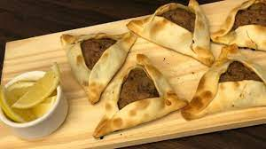

Empanadas Arabes

Descripcion
Las empanadas arabes son un tipo de empanada a base de carne picada condimentada que se suele acompanar con limon y alguna salsa de yogurt cuajado.
Lista de ingredientes
- 1kg de carne picada
- 1 morron rojo
- 300g de cebolla
- 24 tapas de empanadas
- Sal y pimienta a gusto
- Limones para acompanar
Preparacion
- Dorar la carne picada hasta que pierda el color grisaceo y suelte olor.Condimentar con poca sal y pimienta
- Retirar la carne picada de la olla, cortar las cebollas y sofreirlas en la misma sarten que se uso para dorar la carne, junto con los morrones picados.
- Una vez sea vea la cebolla traslucida proceder a agregar la carne nuevamente junto con los jugos que haya soltado, revolver bien hasta que todo se integre, condimentar con sal, limon y pimienta a gusto.
- Dejar enfriar el recado hasta ser manejable, y armar las empanadas.
Volver a la pagina principal